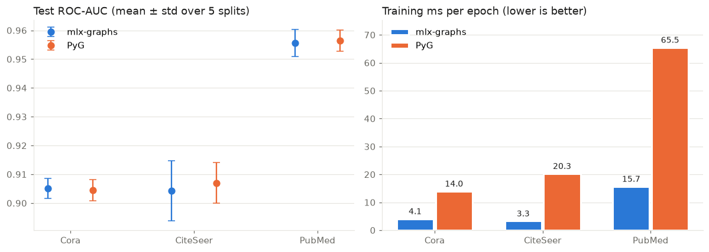

Link prediction: mlx-graphs vs PyG#
Link prediction asks whether an edge should exist between two nodes. It is the task behind friend and product recommendation, the completion of knowledge graphs, and the discovery of interactions between proteins or drugs. The usual recipe is to train a graph neural network (GNN) encoder that maps every node to an embedding, and a decoder that scores a pair of nodes from their two embeddings.
In this tutorial, we:
split the edges of the Cora citation graph into training, validation and test edges without leakage, and sample negative edges;
train a GCN encoder with a dot-product decoder, following PyG’s examples/link_pred.py, and evaluate it with ROC-AUC and average precision;
evaluate the same model as a recommender, with ranking metrics (MRR, Hits@k, NDCG);
train the graph autoencoders
GAEandVGAE;train on mini-batches of edges with
LinkNeighborLoader;train the same model with PyTorch Geometric (PyG) on the same splits of Cora, CiteSeer and PubMed, and compare the accuracy and the time per epoch.
The PyG part needs a few extra dependencies:
pip install torch torch_geometric scikit-learn pandas matplotlib
[1]:
import time
import warnings
import mlx.core as mx
import mlx.nn as nn
import mlx.optimizers as optim
import numpy as np
from mlx_graphs.datasets import PlanetoidDataset
from mlx_graphs.metrics import average_precision_score, roc_auc_score
from mlx_graphs.nn import GCN
from mlx_graphs.transforms import (
Compose,
NormalizeFeatures,
RandomLinkSplit,
ToUndirected,
)
from mlx_graphs.utils import negative_sampling
# MLX keeps freed buffers in a cache to reuse them. A cap on this cache keeps
# the memory use of the notebook low when it alternates between MLX and PyTorch.
mx.set_cache_limit(512 * 1024**2)
# PyTorch 2.15 warns about torch.jit.script when PyG is imported (section 6)
warnings.filterwarnings("ignore", message=".*torch.jit.script.*")
# Same hyperparameters as PyG's examples/link_pred.py
HIDDEN = 128
OUT = 64
LR = 0.01
EPOCHS = 100
SEED = 0
1. The task#
Splitting the edges#
Cora has 2,708 papers and 5,278 citations between them. Each paper is described by a bag of 1,433 words. mlx-graphs stores every undirected edge in both directions, so the graph has 10,556 directed edges. ToUndirected makes sure that both directions are present (it does nothing on Cora), and NormalizeFeatures scales the features of every node to sum to one.
[2]:
mx.random.seed(SEED)
transform = Compose([ToUndirected(), NormalizeFeatures()])
graph = transform(PlanetoidDataset("cora")[0])
print(graph)
Loading cora data ... Done
GraphData(
edge_index(shape=(2, 10556), int32)
node_features(shape=(2708, 1433), float32)
node_labels(shape=(2708,), int32)
train_mask(shape=(2708,), bool)
val_mask(shape=(2708,), bool)
test_mask(shape=(2708,), bool))
To evaluate a link predictor, we hide some edges and ask the model to find them. The model must not see the hidden edges anywhere, otherwise the task becomes trivial: a GNN that passes messages along an edge can easily learn that this edge exists. RandomLinkSplit therefore returns three graphs, and each one has two sets of edges:
edge_index: the message-passing edges, which the encoder sees;edge_label_indexandedge_label: the supervision edges, which the model scores, with label 1 for a real edge and 0 for a negative edge.
The training graph passes messages along the training edges and predicts them. The validation graph also passes messages along the training edges, and predicts the validation edges. The test graph passes messages along the training and validation edges, and predicts the test edges. We use 5% of the edges for validation and 10% for testing, as in PyG’s example. With is_undirected=True, both directions of an edge go to the same split: the supervision edges hold one direction and the
message-passing edges both.
[3]:
split = RandomLinkSplit(
num_val=0.05, num_test=0.1, is_undirected=True, add_negative_train_samples=False
)
train_data, val_data, test_data = split(graph)
for name, data in [("train", train_data), ("val", val_data), ("test", test_data)]:
labels = np.array(data.edge_label)
print(
f"{name:5s} message-passing edges: {data.edge_index.shape[1]:5d} "
f"supervision edges: {int(labels.sum()):4d} positive, "
f"{int((labels == 0).sum()):3d} negative"
)
train message-passing edges: 8976 supervision edges: 4488 positive, 0 negative
val message-passing edges: 8976 supervision edges: 263 positive, 263 negative
test message-passing edges: 9502 supervision edges: 527 positive, 527 negative
We can check that the test edges are not among the message-passing edges of the test graph, in either direction, and that the validation edges are not among those of the validation graph:
[4]:
def edge_set(edge_index):
return set(map(tuple, np.array(edge_index).T.tolist()))
def positives(data):
return np.array(data.edge_label_index)[:, np.array(data.edge_label) == 1]
for name, data in [("val", val_data), ("test", test_data)]:
pos = positives(data)
seen = edge_set(data.edge_index)
leaked = edge_set(pos) | edge_set(pos[::-1])
print(f"{name}: {len(leaked & seen)} supervision edges leak into message passing")
val: 0 supervision edges leak into message passing
test: 0 supervision edges leak into message passing
Negative sampling#
A link predictor also needs examples of pairs of nodes that are not connected. There are millions of such pairs (2,708 × 2,707 ordered pairs minus the edges), so we sample them. negative_sampling draws pairs uniformly among the non-edges of a graph, without replacement and without self-loops.
The validation and test graphs come with a fixed set of negative edges, one per positive edge, sampled once among the non-edges of the full graph. With add_negative_train_samples=False, the training graph has only positive supervision edges: we sample new negatives at every epoch instead, which acts as data augmentation.
[5]:
neg = negative_sampling(
train_data.edge_index, num_nodes=train_data.num_nodes, num_neg_samples=5
)
print(neg)
print("negatives that are edges:", len(edge_set(neg) & edge_set(graph.edge_index)))
array([[1976, 1088, 2289, 2072, 1967],
[722, 2106, 1212, 2565, 1194]], dtype=int32)
negatives that are edges: 0
Note that the training negatives are sampled against the training edges only. A few of them may be validation or test edges, which the model has no way to know. This is the standard protocol, and it is what PyG does.
2. A GCN encoder with a dot-product decoder#
The model follows PyG’s examples/link_pred.py. The encoder is a two-layer GCN (mlx_graphs.nn.GCN, a stack of GCNConv layers with ReLU activations in between) that maps every node to a 64-dimensional embedding \(z\). The decoder scores a pair of nodes \((u, v)\) with the dot product \(z_u \cdot z_v\), a logit: the sigmoid of the score is the predicted probability that the edge exists. We train with the binary cross-entropy between the scores of the positive and negative
edges and their labels.
[6]:
class LinkPredictor(nn.Module):
def __init__(self, encoder):
super().__init__()
self.encoder = encoder
def encode(self, edge_index, x):
return self.encoder(edge_index, x)
def decode(self, z, edge_label_index):
src, dst = edge_label_index
return (z[src] * z[dst]).sum(axis=-1) # one logit per pair
A training step encodes the nodes with the training edges, samples one negative edge per positive edge, and takes one Adam step. bias_correction=True gives the update rule of torch.optim.Adam. The evaluation encodes the nodes with the message-passing edges of the split, and computes the ROC-AUC and the average precision (AP) of the scores of the supervision edges, with mlx_graphs.metrics.
[7]:
def make_train_step(model, train_data, lr=LR):
optimizer = optim.Adam(learning_rate=lr, bias_correction=True)
pos_edges = train_data.edge_label_index
num_pos = pos_edges.shape[1]
labels = mx.concatenate([train_data.edge_label, mx.zeros(num_pos)])
def loss_fn(model, edge_label_index):
z = model.encode(train_data.edge_index, train_data.node_features)
logits = model.decode(z, edge_label_index)
return nn.losses.binary_cross_entropy(
logits, labels, with_logits=True, reduction="mean"
)
loss_and_grad = nn.value_and_grad(model, loss_fn)
def train_step():
model.train()
negatives = negative_sampling(
train_data.edge_index,
num_nodes=train_data.num_nodes,
num_neg_samples=num_pos,
)
edge_label_index = mx.concatenate([pos_edges, negatives], axis=1)
loss, grads = loss_and_grad(model, edge_label_index)
optimizer.update(model, grads)
mx.eval(loss, model.parameters(), optimizer.state)
return loss.item()
return train_step
def evaluate(model, data):
"""Returns (AUC, AP, node embeddings) on the supervision edges of `data`."""
model.eval()
z = model.encode(data.edge_index, data.node_features)
scores = np.array(mx.sigmoid(model.decode(z, data.edge_label_index)))
labels = np.array(data.edge_label)
return roc_auc_score(labels, scores), average_precision_score(labels, scores), z
The training loop evaluates the model on the validation and test edges after every epoch, and keeps the test scores and the test embeddings of the epoch with the best validation AUC. We time the training steps and the evaluations separately.
[8]:
def fit(train_step, evaluate_splits, epochs=EPOCHS, log_every=0):
best = dict(val_auc=0.0)
history = []
for epoch in range(1, epochs + 1):
start = time.perf_counter()
loss = train_step()
train_s = time.perf_counter() - start
start = time.perf_counter()
(val_auc, val_ap, _), (test_auc, test_ap, z) = evaluate_splits()
eval_s = time.perf_counter() - start
history.append(
dict(
epoch=epoch,
loss=loss,
val_auc=val_auc,
test_auc=test_auc,
train_s=train_s,
eval_s=eval_s,
)
)
if val_auc > best["val_auc"]:
best = dict(
epoch=epoch, val_auc=val_auc, test_auc=test_auc, test_ap=test_ap, z=z
)
if log_every and epoch % log_every == 0:
print(
f"epoch {epoch:3d} loss {loss:.4f} val AUC {val_auc:.4f} "
f"test AUC {test_auc:.4f}"
)
return best, history
mx.random.seed(SEED)
model = LinkPredictor(GCN(graph.num_node_features, HIDDEN, 2, out_features_dim=OUT))
best, history = fit(
make_train_step(model, train_data),
lambda: (evaluate(model, val_data), evaluate(model, test_data)),
log_every=10,
)
print(
f"\nbest validation AUC {best['val_auc']:.4f} at epoch {best['epoch']}: "
f"test AUC {best['test_auc']:.4f}, test AP {best['test_ap']:.4f}"
)
epoch 10 loss 0.6891 val AUC 0.6935 test AUC 0.6810
epoch 20 loss 0.6425 val AUC 0.7509 test AUC 0.7593
epoch 30 loss 0.5699 val AUC 0.7347 test AUC 0.7836
epoch 40 loss 0.5347 val AUC 0.7777 test AUC 0.8213
epoch 50 loss 0.4997 val AUC 0.8430 test AUC 0.8480
epoch 60 loss 0.4928 val AUC 0.8578 test AUC 0.8713
epoch 70 loss 0.4665 val AUC 0.8747 test AUC 0.8837
epoch 80 loss 0.4612 val AUC 0.8820 test AUC 0.8968
epoch 90 loss 0.4545 val AUC 0.8847 test AUC 0.9040
epoch 100 loss 0.4419 val AUC 0.8926 test AUC 0.9075
best validation AUC 0.8926 at epoch 100: test AUC 0.9075, test AP 0.9007
The model reaches a test AUC around 0.9: a random positive test edge gets a higher score than a random negative edge about 9 times out of 10.
3. Ranking metrics#
AUC and AP compare the positive test edges with an equal number of random negative edges. Most random pairs of nodes are easy negatives, so these metrics can be optimistic. In a recommendation setting, the question is rather: for a given node, are its true neighbors at the top of the list of all the nodes, ranked by score?
mlx_graphs.metrics provides the ranking metrics of torch_geometric.metrics, with the same API. Each metric is computed per query node from its top-\(k\) predictions, then averaged over the queries that have at least one true neighbor:
LinkPredMRR(k): the mean reciprocal rank, \(1/\mathrm{rank}\) of the first true neighbor in the top-\(k\) (0 if there is none);LinkPredHitRatio(k): the fraction of queries with at least one true neighbor in the top-\(k\) (often called Hits@k);LinkPredNDCG(k): the normalized discounted cumulative gain, which rewards true neighbors near the top, with a discount of \(1/\log_2(\mathrm{rank} + 1)\), normalized so that a perfect ranking scores 1;LinkPredRecall(k): the fraction of the true neighbors found in the top-\(k\).
update takes the [num_queries, k] matrix of the top-\(k\) predicted nodes of each query and the [2, num_labels] ground truth, as (query, node) pairs. LinkPredMetricCollection updates several metrics at once.
Here, the queries are the nodes with a test edge, and the true neighbors are their test edges, in both directions. For each query, we rank all the other nodes, except those it is already connected to in the message-passing graph: these known edges would otherwise fill the top of the list. The queries are processed in chunks, so that the score matrix fits in memory on larger graphs.
[9]:
from mlx_graphs.metrics import (
LinkPredHitRatio,
LinkPredMetricCollection,
LinkPredMRR,
LinkPredNDCG,
LinkPredRecall,
)
K = 20
def ranking_queries(data):
"""Query nodes, ground truth (query position, node) and known edges."""
pos = positives(data)
pos = np.concatenate([pos, pos[::-1]], axis=1) # both directions
queries = np.unique(pos[0])
truth = np.stack([np.searchsorted(queries, pos[0]), pos[1]])
known = np.array(data.edge_index)
is_query = np.isin(known[0], queries)
known = np.stack([np.searchsorted(queries, known[0, is_query]), known[1, is_query]])
return queries, truth, known
def ranking_metrics(z, data, k=K, chunk=1024):
metrics = LinkPredMetricCollection(
[LinkPredMRR(k), LinkPredHitRatio(k), LinkPredNDCG(k), LinkPredRecall(k)]
)
queries, truth, known = ranking_queries(data)
for start in range(0, queries.size, chunk):
stop = min(start + chunk, queries.size)
rows = np.arange(stop - start)
mask = np.zeros((stop - start, z.shape[0]), dtype=bool)
mask[rows, queries[start:stop]] = True # the query itself
in_chunk = (known[0] >= start) & (known[0] < stop)
mask[known[0, in_chunk] - start, known[1, in_chunk]] = True # known edges
scores = z[mx.array(queries[start:stop])] @ z.T
scores = mx.where(mx.array(mask), -mx.inf, scores)
top_k = mx.argsort(-scores, axis=1)[:, :k]
in_chunk = (truth[0] >= start) & (truth[0] < stop)
metrics.update(top_k, (truth[0, in_chunk] - start, truth[1, in_chunk]))
return {name: metric.compute().item() for name, metric in metrics.items()}
ranking_metrics(best["z"], test_data)
[9]:
{'LinkPredMRR@20': 0.08602427691221237, 'LinkPredHitRatio@20': 0.269461065530777, 'LinkPredNDCG@20': 0.11499948799610138, 'LinkPredRecall@20': 0.2373053878545761}
Each query has to find a handful of true neighbors among 2,700 nodes, which is much harder than telling a positive edge from a random negative one. To get a feeling for it, here are the top 5 recommendations of one query node, compared with its hidden test neighbors:
[10]:
queries, truth, known = ranking_queries(test_data)
query = int(queries[0])
scores = best["z"][query] @ best["z"].T
mask = np.zeros(graph.num_nodes, dtype=bool)
mask[[query, *known[1, known[0] == 0]]] = True
scores = mx.where(mx.array(mask), -mx.inf, scores)
print(f"node {query}: hidden test neighbors {sorted(truth[1, truth[0] == 0].tolist())}")
print(f"top 5 predictions {np.array(mx.argsort(-scores)[:5]).tolist()}")
node 0: hidden test neighbors [2582]
top 5 predictions [1701, 1986, 598, 1542, 1810]
4. Graph autoencoders#
The graph autoencoder (GAE) and the variational graph autoencoder (VGAE) of Kipf and Welling (2016) wrap an encoder and an InnerProductDecoder, the same dot-product decoder as above, and provide the loss functions and the evaluation:
recon_loss(z, pos_edge_index)is the binary cross-entropy of the positive edges and of as many negative edges, sampled withnegative_samplingwhen none are given;VGAE’s encoder returns a mean and a log standard deviation for every node;encodesamples the embeddings during training and returns the mean during evaluation, andkl_loss()is the KL divergence to a unit Gaussian;test(z, pos_edge_index, neg_edge_index)returns the AUC and the AP.
We follow PyG’s examples/autoencoder.py, with 16-dimensional embeddings and 400 epochs, on the same splits as before.
[11]:
from mlx_graphs.nn import GAE, VGAE, GCNConv
class GCNEncoder(nn.Module):
def __init__(self, in_dim, out_dim):
super().__init__()
self.conv1 = GCNConv(in_dim, 2 * out_dim)
self.conv2 = GCNConv(2 * out_dim, out_dim)
def __call__(self, edge_index, x):
return self.conv2(edge_index, nn.relu(self.conv1(edge_index, x)))
class VariationalGCNEncoder(nn.Module):
def __init__(self, in_dim, out_dim):
super().__init__()
self.conv1 = GCNConv(in_dim, 2 * out_dim)
self.conv_mu = GCNConv(2 * out_dim, out_dim)
self.conv_logstd = GCNConv(2 * out_dim, out_dim)
def __call__(self, edge_index, x):
h = nn.relu(self.conv1(edge_index, x))
return self.conv_mu(edge_index, h), self.conv_logstd(edge_index, h)
def split_labels(data):
"""Positive and negative supervision edges of `data`."""
labels = np.array(data.edge_label)
edges = np.array(data.edge_label_index)
return mx.array(edges[:, labels == 1]), mx.array(edges[:, labels == 0])
def train_autoencoder(model, variational, epochs=400, log_every=100):
optimizer = optim.Adam(learning_rate=LR, bias_correction=True)
train_pos, _ = split_labels(train_data)
test_pos, test_neg = split_labels(test_data)
def loss_fn(model):
z = model.encode(train_data.edge_index, train_data.node_features)
loss = model.recon_loss(z, train_pos)
if variational:
loss = loss + model.kl_loss() / train_data.num_nodes
return loss
loss_and_grad = nn.value_and_grad(model, loss_fn)
for epoch in range(1, epochs + 1):
model.train()
loss, grads = loss_and_grad(model)
optimizer.update(model, grads)
mx.eval(loss, model.parameters(), optimizer.state)
if epoch % log_every == 0:
model.eval()
z = model.encode(test_data.edge_index, test_data.node_features)
auc, ap = model.test(z, test_pos, test_neg)
print(
f"epoch {epoch:3d} loss {loss.item():.4f} "
f"test AUC {auc:.4f} test AP {ap:.4f}"
)
mx.random.seed(SEED)
print("GAE")
train_autoencoder(GAE(GCNEncoder(graph.num_node_features, 16)), variational=False)
print("VGAE")
train_autoencoder(
VGAE(VariationalGCNEncoder(graph.num_node_features, 16)), variational=True
)
GAE
epoch 100 loss 0.8933 test AUC 0.9068 test AP 0.8991
epoch 200 loss 0.8810 test AUC 0.9055 test AP 0.9045
epoch 300 loss 0.8650 test AUC 0.9191 test AP 0.9171
epoch 400 loss 0.8419 test AUC 0.9209 test AP 0.9201
VGAE
epoch 100 loss 1.1598 test AUC 0.7484 test AP 0.7303
epoch 200 loss 0.9585 test AUC 0.8771 test AP 0.8641
epoch 300 loss 0.9223 test AUC 0.8931 test AP 0.8873
epoch 400 loss 0.9024 test AUC 0.9038 test AP 0.9035
The GAE, with its 16-dimensional embeddings, does about as well as the larger model of section 2. The VGAE learns more slowly: its embeddings are sampled during training, and the KL term pulls them towards a unit Gaussian, which regularizes the model but slows down the fit of the edges. The autoencoders also provide decoder.forward_all(z), which returns the dense matrix of the probabilities of all the node pairs.
5. Mini-batch training with LinkNeighborLoader#
Full-batch training encodes every node of the graph at every step, which does not scale to graphs with millions of nodes. LinkNeighborLoader iterates over mini-batches of supervision edges instead. For each batch, it:
takes
batch_sizesupervision edges and adds negative edges, here one per positive edge (NegativeSampling("binary"));samples the neighborhood of the endpoints of these edges, here 10 neighbors at the first hop and 10 at the second, along the message-passing edges of the graph it is given;
returns the sampled subgraph, with the supervision edges relabeled to the local node ids of the subgraph.
Unlike negative_sampling, the loader’s negatives are drawn uniformly at random, without checking that they are non-edges, as in PyG. On a sparse graph, almost all of them are.
[12]:
from mlx_graphs.loaders import LinkNeighborLoader, NegativeSampling
np.random.seed(SEED) # the loader's negatives come from NumPy
loader = LinkNeighborLoader(
train_data,
num_neighbors=[10, 10],
edge_label_index=train_data.edge_label_index,
edge_label=train_data.edge_label,
neg_sampling=NegativeSampling("binary", amount=1),
batch_size=256,
shuffle=True,
)
batch = next(iter(loader))
print(f"{len(loader)} batches per epoch")
print(batch)
18 batches per epoch
GraphData(
edge_index(shape=(2, 6612), int32)
node_features(shape=(2296, 1433), float32)
node_labels(shape=(2296,), int32)
train_mask(shape=(2296,), bool)
val_mask(shape=(2296,), bool)
test_mask(shape=(2296,), bool)
n_id(shape=(2296,), int32)
e_id(shape=(6612,), int32)
input_id(shape=(256,), int32)
edge_label_index(shape=(2, 512), int32)
edge_label(shape=(512,), float32))
The batch is a GraphData with:
node_features,edge_index: the sampled subgraph, with local node ids.n_idmaps them to the global ids of the full graph, and the endpoints of the supervision edges (the seeds) come first;edge_label_index: the 256 positive supervision edges followed by the 256 negative ones, as local node ids;edge_label: 1 for the positives and 0 for the negatives;input_id: the positions of the positive edges in theedge_label_indexgiven to the loader, ande_id: the ids of the sampled edges in the full graph.
Mapping the local ids back through n_id gives the global supervision edges:
[13]:
local = np.array(batch.edge_label_index)
global_edges = np.array(batch.n_id)[local]
print("first positive edges:", global_edges[:, :3].T.tolist())
print(
"same as the loader's input:",
np.array_equal(
global_edges[:, :256],
np.array(train_data.edge_label_index)[:, np.array(batch.input_id)],
),
)
print("labels:", np.array(batch.edge_label)[[0, 1, 255, 256, 257, -1]])
first positive edges: [[1701, 1852], [819, 1606], [1250, 2507]]
same as the loader's input: True
labels: [1. 1. 1. 0. 0. 0.]
For the model, we use a GraphSAGE encoder. Its mean aggregation is less sensitive than the degree normalization of GCN to the degrees of the sampled subgraphs, which are smaller than in the full graph. The training loop is the same as before, but on batches. After every epoch, we evaluate the model full batch on the test graph: the encoder does not depend on the size of the graph, so it can encode the whole graph at once.
[14]:
from mlx_graphs.nn import GraphSAGE
def batch_loss(model, batch):
z = model.encode(batch.edge_index, batch.node_features)
logits = model.decode(z, batch.edge_label_index)
return nn.losses.binary_cross_entropy(
logits, batch.edge_label, with_logits=True, reduction="mean"
)
mx.random.seed(SEED)
sage_model = LinkPredictor(
GraphSAGE(graph.num_node_features, HIDDEN, 2, out_features_dim=OUT)
)
sage_optimizer = optim.Adam(learning_rate=0.005, bias_correction=True)
loss_and_grad = nn.value_and_grad(sage_model, batch_loss)
for epoch in range(1, 11):
sage_model.train()
start, total = time.perf_counter(), 0.0
for batch in loader:
loss, grads = loss_and_grad(sage_model, batch)
sage_optimizer.update(sage_model, grads)
mx.eval(loss, sage_model.parameters(), sage_optimizer.state)
total += loss.item()
seconds = time.perf_counter() - start
test_auc, test_ap, _ = evaluate(sage_model, test_data)
print(
f"epoch {epoch:2d} loss {total / len(loader):.4f} test AUC {test_auc:.4f} "
f"test AP {test_ap:.4f} ({seconds:.2f} s)"
)
epoch 1 loss 0.6730 test AUC 0.7535 test AP 0.7193 (0.06 s)
epoch 2 loss 0.5943 test AUC 0.7576 test AP 0.7186 (0.04 s)
epoch 3 loss 0.5860 test AUC 0.7629 test AP 0.7315 (0.04 s)
epoch 4 loss 0.5792 test AUC 0.7871 test AP 0.7742 (0.05 s)
epoch 5 loss 0.5460 test AUC 0.8260 test AP 0.8136 (0.05 s)
epoch 6 loss 0.5266 test AUC 0.8377 test AP 0.8352 (0.05 s)
epoch 7 loss 0.5111 test AUC 0.8578 test AP 0.8495 (0.06 s)
epoch 8 loss 0.5012 test AUC 0.8688 test AP 0.8669 (0.06 s)
epoch 9 loss 0.4899 test AUC 0.8723 test AP 0.8736 (0.07 s)
epoch 10 loss 0.4867 test AUC 0.8755 test AP 0.8733 (0.06 s)
On a graph as small as Cora, mini-batches bring no speedup: each epoch runs many small steps instead of one large one. They matter on graphs that do not fit in memory, where they keep the memory use of a step bounded by the batch size and the number of sampled neighbors. The same loader also accepts a HeteroGraphData, with the supervised edge type as edge_label_index, and NegativeSampling("triplet") returns negative destination nodes per positive edge for ranking losses.
6. Comparison with PyG#
We now train the GCN link predictor of section 2 with PyG and with mlx-graphs on the same data. The PyG version is PyG’s examples/link_pred.py, with the same hyperparameters. To make sure that both frameworks see exactly the same edges, we split each graph once with mlx-graphs’ RandomLinkSplit and convert the three graphs to PyG with to_pyg, which keeps every array, including edge_label_index and edge_label.
We repeat this on Cora, CiteSeer and PubMed, with 5 random splits each. Each split is used by both frameworks, with a different random initialization in each.
[15]:
import torch
from sklearn.metrics import average_precision_score as sk_ap
from sklearn.metrics import roc_auc_score as sk_auc
from torch_geometric.metrics import LinkPredHitRatio as PyGHitRatio
from torch_geometric.metrics import LinkPredMetricCollection as PyGCollection
from torch_geometric.metrics import LinkPredMRR as PyGMRR
from torch_geometric.metrics import LinkPredNDCG as PyGNDCG
from torch_geometric.metrics import LinkPredRecall as PyGRecall
from torch_geometric.nn import GCNConv as PyGGCNConv
from torch_geometric.utils import negative_sampling as pyg_negative_sampling
from mlx_graphs.utils import to_pyg
pyg_train, pyg_val, pyg_test = (to_pyg(d) for d in (train_data, val_data, test_data))
print(pyg_test)
for mlx_split, pyg_split in [(train_data, pyg_train), (test_data, pyg_test)]:
for key in ("edge_index", "edge_label_index", "edge_label"):
same = np.array_equal(
np.array(getattr(mlx_split, key)), getattr(pyg_split, key).numpy()
)
assert same, key
print("PyG and mlx-graphs use the same edges")
Data(edge_index=[2, 9502], x=[2708, 1433], y=[2708], train_mask=[2708], val_mask=[2708], test_mask=[2708], edge_label_index=[2, 1054], edge_label=[1054], num_nodes=2708)
PyG and mlx-graphs use the same edges
The PyG model, training step and evaluation mirror the mlx-graphs ones. The evaluation computes the AUC and the AP with scikit-learn, and the ranking metrics with torch_geometric.metrics, on the same queries.
[16]:
class PyGLinkPredictor(torch.nn.Module):
def __init__(self, in_channels, hidden_channels, out_channels):
super().__init__()
self.conv1 = PyGGCNConv(in_channels, hidden_channels)
self.conv2 = PyGGCNConv(hidden_channels, out_channels)
def encode(self, x, edge_index):
x = self.conv1(x, edge_index).relu()
return self.conv2(x, edge_index)
def decode(self, z, edge_label_index):
return (z[edge_label_index[0]] * z[edge_label_index[1]]).sum(dim=-1)
def make_pyg_train_step(model, data, lr=LR):
optimizer = torch.optim.Adam(params=model.parameters(), lr=lr)
criterion = torch.nn.BCEWithLogitsLoss()
def train_step():
model.train()
optimizer.zero_grad()
z = model.encode(data.x, data.edge_index)
neg_edge_index = pyg_negative_sampling(
edge_index=data.edge_index,
num_nodes=data.num_nodes,
num_neg_samples=data.edge_label_index.size(1),
method="sparse",
)
edge_label_index = torch.cat([data.edge_label_index, neg_edge_index], dim=-1)
edge_label = torch.cat(
[data.edge_label, data.edge_label.new_zeros(neg_edge_index.size(1))]
)
out = model.decode(z, edge_label_index).view(-1)
loss = criterion(out, edge_label)
loss.backward()
optimizer.step()
return loss.item()
return train_step
@torch.no_grad()
def pyg_evaluate(model, data):
model.eval()
z = model.encode(data.x, data.edge_index)
out = model.decode(z, data.edge_label_index).view(-1).sigmoid().numpy()
labels = data.edge_label.numpy()
return sk_auc(labels, out), sk_ap(labels, out), z
@torch.no_grad()
def pyg_top_k(z, queries, known, k=K):
"""Top-k nodes of each query, except itself and its known neighbors."""
scores = z[queries] @ z.t()
scores[torch.arange(queries.numel()), queries] = -torch.inf
scores[known[0], known[1]] = -torch.inf
return scores.topk(k, dim=1).indices
def pyg_ranking_metrics(z, mlx_data, k=K, chunk=1024):
metrics = PyGCollection([PyGMRR(k), PyGHitRatio(k), PyGNDCG(k), PyGRecall(k)])
queries, truth, known = (torch.from_numpy(a) for a in ranking_queries(mlx_data))
for start in range(0, queries.numel(), chunk):
stop = min(start + chunk, queries.numel())
in_chunk = (known[0] >= start) & (known[0] < stop)
chunk_known = torch.stack([known[0, in_chunk] - start, known[1, in_chunk]])
top_k = pyg_top_k(z, queries[start:stop], chunk_known, k)
in_chunk = (truth[0] >= start) & (truth[0] < stop)
metrics.update(
top_k, torch.stack([truth[0, in_chunk] - start, truth[1, in_chunk]])
)
return {name: float(value) for name, value in metrics.compute().items()}
A quick sanity check: on the same predictions, the metrics of mlx-graphs agree with those of scikit-learn and PyG. Here, we score the test edges of Cora with the PyG model before training, and rank the nodes with PyTorch for both ranking metric collections:
[17]:
torch.manual_seed(SEED)
pyg_model = PyGLinkPredictor(graph.num_node_features, HIDDEN, OUT)
auc, ap, z = pyg_evaluate(pyg_model, pyg_test)
with torch.no_grad():
scores = pyg_model.decode(z, pyg_test.edge_label_index).sigmoid().numpy()
labels = pyg_test.edge_label.numpy()
print(f"AUC scikit-learn {auc:.6f} mlx-graphs {roc_auc_score(labels, scores):.6f}")
print(
f"AP scikit-learn {ap:.6f} mlx-graphs "
f"{average_precision_score(labels, scores):.6f}"
)
queries, truth, known = (torch.from_numpy(a) for a in ranking_queries(test_data))
top_k = pyg_top_k(z, queries, known)
pyg_metrics = PyGCollection([PyGMRR(K), PyGHitRatio(K), PyGNDCG(K), PyGRecall(K)])
pyg_metrics.update(top_k, truth)
mlx_metrics = LinkPredMetricCollection(
[LinkPredMRR(K), LinkPredHitRatio(K), LinkPredNDCG(K), LinkPredRecall(K)]
)
mlx_metrics.update(mx.array(top_k.numpy()), truth.numpy())
for name, value in pyg_metrics.compute().items():
mlx_value = mlx_metrics[name].compute().item()
print(f"{name:20s} PyG {float(value):.6f} mlx-graphs {mlx_value:.6f}")
AUC scikit-learn 0.683724 mlx-graphs 0.683724
AP scikit-learn 0.684429 mlx-graphs 0.684429
LinkPredMRR@20 PyG 0.024764 mlx-graphs 0.024764
LinkPredHitRatio@20 PyG 0.076647 mlx-graphs 0.076647
LinkPredNDCG@20 PyG 0.031640 mlx-graphs 0.031640
LinkPredRecall@20 PyG 0.067405 mlx-graphs 0.067405
The ranking metrics depend on the order of the scores, so two implementations that compute the scores slightly differently (on a GPU and on a CPU, for example) can order near-ties differently and get slightly different values from the same embeddings. In the benchmark below, each framework ranks the nodes with its own embeddings.
Now the benchmark. For every dataset and split, we train both models for 100 epochs and keep the test metrics at the epoch with the best validation AUC, as PyG’s example does.
[18]:
print(
f"PyTorch {torch.__version__}, {torch.get_num_threads()} CPU threads; "
f"MLX {mx.__version__}, device {mx.default_device()}"
)
DATASETS = ["cora", "citeseer", "pubmed"]
SPLIT_SEEDS = [0, 1, 2, 3, 4]
runs = []
for dataset_name in DATASETS:
full_graph = transform(PlanetoidDataset(dataset_name)[0])
for seed in SPLIT_SEEDS:
mx.random.seed(seed)
splits = split(full_graph)
test_split = splits[2]
pyg_splits = [to_pyg(d) for d in splits]
in_dim = full_graph.num_node_features
mx.random.seed(seed)
model = LinkPredictor(GCN(in_dim, HIDDEN, 2, out_features_dim=OUT))
mlx_best, mlx_history = fit(
make_train_step(model, splits[0]),
lambda: (evaluate(model, splits[1]), evaluate(model, splits[2])),
)
mlx_best.update(ranking_metrics(mlx_best.pop("z"), test_split))
torch.manual_seed(seed)
pyg_model = PyGLinkPredictor(in_dim, HIDDEN, OUT)
pyg_best, pyg_history = fit(
make_pyg_train_step(pyg_model, pyg_splits[0]),
lambda: (
pyg_evaluate(pyg_model, pyg_splits[1]),
pyg_evaluate(pyg_model, pyg_splits[2]),
),
)
pyg_best.update(pyg_ranking_metrics(pyg_best.pop("z"), test_split))
for framework, best, history in [
("mlx-graphs", mlx_best, mlx_history),
("PyG", pyg_best, pyg_history),
]:
runs.append(
dict(
dataset=dataset_name,
framework=framework,
seed=seed,
**best,
train_s=np.median([h["train_s"] for h in history]),
eval_s=np.median([h["eval_s"] for h in history]),
)
)
print(
f"{dataset_name:8s} split {seed} {framework:10s} "
f"test AUC {best['test_auc']:.4f} AP {best['test_ap']:.4f} "
f"MRR@{K} {best[f'LinkPredMRR@{K}']:.4f} "
f"train {1000 * runs[-1]['train_s']:.1f} ms/epoch "
f"eval {1000 * runs[-1]['eval_s']:.1f} ms/epoch"
)
PyTorch 2.15.0, 6 CPU threads; MLX 0.32.4, device Device(gpu, 0)
Loading cora data ... Done
cora split 0 mlx-graphs test AUC 0.9075 AP 0.9007 MRR@20 0.0860 train 4.0 ms/epoch eval 3.2 ms/epoch
cora split 0 PyG test AUC 0.9069 AP 0.9016 MRR@20 0.0793 train 14.0 ms/epoch eval 12.9 ms/epoch
cora split 1 mlx-graphs test AUC 0.9061 AP 0.9060 MRR@20 0.0765 train 3.7 ms/epoch eval 3.1 ms/epoch
cora split 1 PyG test AUC 0.9010 AP 0.8932 MRR@20 0.0740 train 13.9 ms/epoch eval 12.8 ms/epoch
cora split 2 mlx-graphs test AUC 0.9007 AP 0.8988 MRR@20 0.0913 train 4.2 ms/epoch eval 3.7 ms/epoch
cora split 2 PyG test AUC 0.9071 AP 0.9066 MRR@20 0.1061 train 14.0 ms/epoch eval 12.8 ms/epoch
cora split 3 mlx-graphs test AUC 0.9088 AP 0.9013 MRR@20 0.1164 train 4.4 ms/epoch eval 3.9 ms/epoch
cora split 3 PyG test AUC 0.9072 AP 0.9042 MRR@20 0.1034 train 13.9 ms/epoch eval 12.9 ms/epoch
cora split 4 mlx-graphs test AUC 0.9022 AP 0.8989 MRR@20 0.0996 train 4.3 ms/epoch eval 3.8 ms/epoch
cora split 4 PyG test AUC 0.9001 AP 0.8992 MRR@20 0.0988 train 14.2 ms/epoch eval 13.1 ms/epoch
Loading citeseer data ... Done
citeseer split 0 mlx-graphs test AUC 0.9029 AP 0.9066 MRR@20 0.0672 train 3.5 ms/epoch eval 3.3 ms/epoch
citeseer split 0 PyG test AUC 0.9037 AP 0.9077 MRR@20 0.0768 train 19.7 ms/epoch eval 17.7 ms/epoch
citeseer split 1 mlx-graphs test AUC 0.8983 AP 0.8997 MRR@20 0.0734 train 3.2 ms/epoch eval 2.9 ms/epoch
citeseer split 1 PyG test AUC 0.9007 AP 0.8962 MRR@20 0.0625 train 20.6 ms/epoch eval 18.8 ms/epoch
citeseer split 2 mlx-graphs test AUC 0.9114 AP 0.9183 MRR@20 0.0738 train 3.0 ms/epoch eval 2.7 ms/epoch
citeseer split 2 PyG test AUC 0.9139 AP 0.9183 MRR@20 0.0668 train 20.3 ms/epoch eval 19.7 ms/epoch
citeseer split 3 mlx-graphs test AUC 0.9176 AP 0.9116 MRR@20 0.0567 train 3.2 ms/epoch eval 2.8 ms/epoch
citeseer split 3 PyG test AUC 0.9152 AP 0.9142 MRR@20 0.0766 train 20.8 ms/epoch eval 19.9 ms/epoch
citeseer split 4 mlx-graphs test AUC 0.8913 AP 0.8997 MRR@20 0.0748 train 3.3 ms/epoch eval 3.1 ms/epoch
citeseer split 4 PyG test AUC 0.9016 AP 0.9085 MRR@20 0.0710 train 20.2 ms/epoch eval 18.7 ms/epoch
Loading pubmed data ... Done
pubmed split 0 mlx-graphs test AUC 0.9508 AP 0.9522 MRR@20 0.0319 train 13.7 ms/epoch eval 5.8 ms/epoch
pubmed split 0 PyG test AUC 0.9591 AP 0.9598 MRR@20 0.0354 train 64.7 ms/epoch eval 34.7 ms/epoch
pubmed split 1 mlx-graphs test AUC 0.9630 AP 0.9649 MRR@20 0.0366 train 17.9 ms/epoch eval 6.6 ms/epoch
pubmed split 1 PyG test AUC 0.9602 AP 0.9625 MRR@20 0.0353 train 69.6 ms/epoch eval 37.2 ms/epoch
pubmed split 2 mlx-graphs test AUC 0.9523 AP 0.9562 MRR@20 0.0301 train 17.5 ms/epoch eval 6.6 ms/epoch
pubmed split 2 PyG test AUC 0.9563 AP 0.9595 MRR@20 0.0320 train 65.5 ms/epoch eval 34.5 ms/epoch
pubmed split 3 mlx-graphs test AUC 0.9563 AP 0.9573 MRR@20 0.0332 train 15.7 ms/epoch eval 6.4 ms/epoch
pubmed split 3 PyG test AUC 0.9507 AP 0.9522 MRR@20 0.0293 train 62.6 ms/epoch eval 33.9 ms/epoch
pubmed split 4 mlx-graphs test AUC 0.9555 AP 0.9573 MRR@20 0.0356 train 13.9 ms/epoch eval 5.9 ms/epoch
pubmed split 4 PyG test AUC 0.9562 AP 0.9574 MRR@20 0.0360 train 64.9 ms/epoch eval 35.8 ms/epoch
The table below averages the 5 splits of every dataset. The test metrics are taken at the epoch with the best validation AUC, and the times are the median time per epoch of a run (the median is less sensitive than the mean to an epoch slowed down by other programs), averaged over the runs.
[19]:
import pandas as pd
pd.set_option("display.width", 200)
pd.set_option("display.max_columns", None)
results = pd.DataFrame(runs)
results["train ms/epoch"] = 1000 * results["train_s"]
results["eval ms/epoch"] = 1000 * results["eval_s"]
columns = {
"test_auc": "test AUC",
"test_ap": "test AP",
f"LinkPredMRR@{K}": f"MRR@{K}",
f"LinkPredHitRatio@{K}": f"Hits@{K}",
f"LinkPredNDCG@{K}": f"NDCG@{K}",
"train ms/epoch": "train ms/epoch",
"eval ms/epoch": "eval ms/epoch",
}
summary = (
results.rename(columns=columns)
.groupby(["dataset", "framework"], sort=False)[list(columns.values())]
.mean()
.round({name: 4 for name in list(columns.values())[:5]})
.round({"train ms/epoch": 1, "eval ms/epoch": 1})
)
summary
[19]:
| test AUC | test AP | MRR@20 | Hits@20 | NDCG@20 | train ms/epoch | eval ms/epoch | ||
|---|---|---|---|---|---|---|---|---|
| dataset | framework | |||||||
| cora | mlx-graphs | 0.9051 | 0.9011 | 0.0940 | 0.2656 | 0.1179 | 4.1 | 3.6 |
| PyG | 0.9045 | 0.9009 | 0.0923 | 0.2646 | 0.1167 | 14.0 | 12.9 | |
| citeseer | mlx-graphs | 0.9043 | 0.9072 | 0.0692 | 0.2283 | 0.0921 | 3.3 | 2.9 |
| PyG | 0.9070 | 0.9090 | 0.0707 | 0.2303 | 0.0937 | 20.3 | 19.0 | |
| pubmed | mlx-graphs | 0.9556 | 0.9576 | 0.0335 | 0.1218 | 0.0402 | 15.7 | 6.3 |
| PyG | 0.9565 | 0.9583 | 0.0336 | 0.1243 | 0.0407 | 65.5 | 35.2 |
[20]:
for dataset_name in DATASETS:
times = summary.loc[dataset_name]
train = (
times.loc["PyG", "train ms/epoch"] / times.loc["mlx-graphs", "train ms/epoch"]
)
evals = times.loc["PyG", "eval ms/epoch"] / times.loc["mlx-graphs", "eval ms/epoch"]
print(
f"{dataset_name:8s} mlx-graphs trains {train:.1f}x faster "
f"and evaluates {evals:.1f}x faster than PyG"
)
cora mlx-graphs trains 3.4x faster and evaluates 3.6x faster than PyG
citeseer mlx-graphs trains 6.2x faster and evaluates 6.6x faster than PyG
pubmed mlx-graphs trains 4.2x faster and evaluates 5.6x faster than PyG
[21]:
import matplotlib.pyplot as plt
COLORS = {"mlx-graphs": "#2a78d6", "PyG": "#eb6834"}
INK, MUTED, GRID = "#1f1f1e", "#6b6a64", "#e6e5e0"
NAMES = {"cora": "Cora", "citeseer": "CiteSeer", "pubmed": "PubMed"}
FRAMEWORKS = ["mlx-graphs", "PyG"]
fig, (ax_auc, ax_time) = plt.subplots(1, 2, figsize=(11, 4))
x = np.arange(len(DATASETS))
width = 0.36
for i, framework in enumerate(FRAMEWORKS):
offset = (i - 0.5) * width
runs_of = results[results["framework"] == framework].groupby("dataset", sort=False)
auc = runs_of["test_auc"].agg(["mean", "std"]).loc[DATASETS]
ax_auc.errorbar(
x + offset,
auc["mean"],
yerr=auc["std"],
fmt="o",
markersize=7,
capsize=4,
color=COLORS[framework],
label=framework,
)
times = summary.xs(framework, level="framework").loc[DATASETS, "train ms/epoch"]
bars = ax_time.bar(
x + offset,
times,
width - 0.02,
color=COLORS[framework],
edgecolor="white",
linewidth=2,
label=framework,
)
for bar, value in zip(bars, times):
ax_time.annotate(
f"{value:.1f}",
(bar.get_x() + bar.get_width() / 2, value),
xytext=(0, 3),
textcoords="offset points",
ha="center",
va="bottom",
color=INK,
fontsize=9,
)
ax_auc.set_title(
f"Test ROC-AUC (mean ± std over {len(SPLIT_SEEDS)} splits)", loc="left", color=INK
)
ax_time.set_title("Training ms per epoch (lower is better)", loc="left", color=INK)
ax_time.set_ylim(0, summary["train ms/epoch"].max() * 1.15)
for ax in (ax_auc, ax_time):
ax.set_xticks(x, [NAMES[d] for d in DATASETS])
ax.legend(frameon=False)
ax.grid(axis="y", color=GRID, linewidth=0.8)
ax.set_axisbelow(True)
ax.tick_params(colors=MUTED)
for side in ("top", "right"):
ax.spines[side].set_visible(False)
for side in ("left", "bottom"):
ax.spines[side].set_color(GRID)
fig.tight_layout()
plt.show()

These timings were measured on an Apple M5 Pro, with mlx-graphs on the GPU and PyG on the CPU (the number of PyTorch threads is printed above).
Accuracy. The two frameworks train the same model to the same accuracy: on every dataset, the test AUC and AP of mlx-graphs and PyG are within the variation between splits, shown by the error bars, and so are the ranking metrics in the table. The models start from different random weights, so the results of a given split differ slightly between the frameworks, as they would between two runs of the same framework.
The ranking metrics are much lower than the AUC. Telling a positive edge from a random negative edge is easy, while finding the few hidden neighbors of a node among all the others is not, and it gets harder as the graph grows: PubMed has the highest AUC but the lowest MRR and Hits@20, since each query ranks almost 20,000 nodes.
Runtime. mlx-graphs is faster than PyG on all three datasets, both for training and for evaluation; the speedups are printed above the figure. On graphs this small, an epoch takes milliseconds, so fixed costs, such as the negative sampling on the CPU (in both frameworks) and launching the GPU kernels, weigh a lot in the training time. Timings vary from run to run and from machine to machine, so run the notebook on your own machine to compare.
Going further#
The same code runs on larger graphs with
AmazonDataset("photo")orCoauthorDataset("cs"); examples/link_prediction.py is a command-line version of section 2.For heterogeneous graphs, such as users and items,
LinkNeighborLoadertakes aHeteroGraphDataand the supervised edge type, andto_heteroturns a homogeneous encoder into a heterogeneous one.LightGCNis a light-weight model for recommendation, trained with a ranking loss, whoserecommendmethod returns the top-\(k\) items of a user. The ranking metrics of section 3 evaluate it directly.For knowledge graphs, whose edges have types,
mlx_graphs.nnprovides the embedding modelsTransE,DistMult,ComplExandRotatE, with aKGTripletLoaderandtestmethods that compute the mean rank and Hits@k.train_test_split_edgesis the older, functional way to split the edges, andbatched_negative_samplingsamples negative edges within each graph of a batch of graphs.